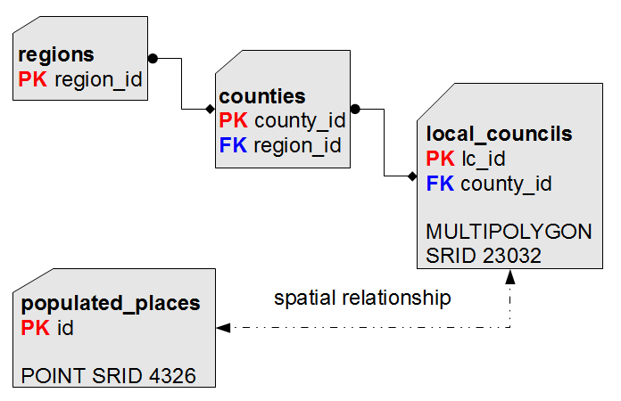

Normal Form
Any well designed DB adheres to the relational
paradigm, and implements the so-called Normal
Form.
Very simply explained in plain words:
Consider the ISTAT Census 2001; identifying categories and
relations is absolutely simple:
- At the lowermost hierarchy level we have obviously Local
Councils.
- Each Local Council surely belongs to some County: so a relation
exists connecting Local Councils and Counties.
To be more descriptive, this one is a typical
one-to-many relationship
(one single County / many Local Councils: placing the same Local
Council on two different Counties is absolutely forbidden).
- The same is true for Counties and Regions.
- There is not real need to establish a relation between Local
Councils and Regions, because we can get this relation using the
County as an intermediate pivot.

Accordingly to this, it's quite easy to identify several flaws in
the original Shapefile's layout:
- a POP2001
value is present for Local Councils, Counties and Regions:
well, this one clearly is an unneeded redundancy.
We simply have to preserve this information at the lowermost level
(Local Councils):
because we can then compute anyway an aggregate value for Counties
(or Regions).
- a second redundancy exists: there is no real need compelling us
to store both County and Region codes for each Local Council.
Preserving the County code is just enough, because we can get a
reference to the corresponding Region anyway simply referencing the
County.
- a Geometry representation is stored for each County and
Region:
this too represents an unneeded redundancy, because we can get such
Geometries simply aggregating the ones stored at the Local Council
level.
Then we have the
"Courier New, monospace">cities1000 dataset: which
comes from a completely different source (so there is no useful key
we can use to establish relations to other entities).
And this dataset is in the
"Courier New, monospace">4326 SRID (WGS84),
whilst any ISTAT - Census 2001 dataset is in the
"Courier New, monospace">23032 SRID [ED50 UTM zone
32];
so for now will simply keep this dataset in a completely
self-standing state.
We'll see later how we can actually integrate this dataset with the
other ones: after all, all them represent Italy, isn't ?
For sure some geographic relationship must exist ... |
TABLE regions (
region_id INTEGER NOT NULL PRIMARY KEY,
region_name TEXT NOT NULL);
|
Step 1a) we'll start creating the
"Courier New, monospace">regions table (i.e. the one
positioned at the topmost hierarchic level).
Please note: we have defined a
"Courier New, monospace">PRIMARY KEY, i.e. a unique
(not duplicable), absolutely unambiguous identifier for each
Region.
INTO regions (region_id, region_name)
SELECT COD_REG, REGIONE
FROM reg2001_s;
|
Step 1b) then we'll populate the
"Courier New, monospace">regions table.
Using the INSERT INTO ...
SELECT ... is more or less like performing a copy:
rows are extracted from the input table and immediately inserted
into the output table.
As you can see, corresponding columns are explicitly identified
by order.
CREATE
TABLE counties (
county_id INTEGER NOT NULL PRIMARY KEY,
county_name TEXT NOT NULL,
car_plate_code TEXT NOT NULL,
region_id INTEGER NOT NULL,
CONSTRAINT fk_county_region
FOREIGN KEY (region_id)
REFERENCES regions
(region_id));
|
INTO counties (county_id, county_name,
car_plate_code, region_id)
SELECT cod_pro, provincia, sigla, cod_reg
FROM prov2001_s;
|
Step 2a) we'll now create (and populate) the
"Courier New, monospace">counties table.
Please note: a relation exists linking
"Courier New, monospace">counties and
"Courier New, monospace">regions.
Defining an appropriate
"Courier New, monospace">FOREIGN KEY we'll make such
relation to be explicitly set once for all.
INDEX idx_county_region
ON counties (region_id);
|
Step 2b) accordingly to performance considerations, we must
also create an INDEX
corresponding to each
"Courier New, monospace">FOREIGN KEY we'll define.
Very shortly explained: a
"Courier New, monospace">PRIMARY KEY isn't simply a
logical constraint.
In SQLite defining a PRIMARY
KEY automatically implies generating an implicit index
supporting fast direct access to each single row.
But on the other side defining a
"Courier New, monospace">FOREIGN KEY simply
establishes a logical constraint:
so if you actually wish to support fast direct access to each
single row you have to explicitly create the corresponding
index.
CREATE
TABLE local_councils (
lc_id INTEGER NOT NULL PRIMARY KEY,
lc_name TEXT NOT NULL,
population INTEGER NOT NULL,
county_id INTEGER NOT NULL,
CONSTRAINT fk_lc_county
FOREIGN KEY (county_id)
REFERENCES counties
(county_id));
|
INDEX idx_lc_county
ON local_councils (county_id);
|
Step 3a) we'll now create the
"Courier New, monospace">local_councils table.
A relation exists linking
"Courier New, monospace">local_councils and
counties.
So in this case too we have to define a
"Courier New, monospace">FOREIGN KEY , then creating
the corresponding index.
Please note: we haven't defined any Geometry column,
although one is required for
"Courier New, monospace">local_councils;
this is not a mistake, this is absolutely intentional.
AddGeometryColumn(
'local_councils', 'geometry',
23032, 'MULTIPOLYGON', 'XY');
|
Step 3b) creating a Geometry column isn't the same as
creating any other ordinary column.
We have to use the
"Courier New, monospace">AddGeometryColumn() spatial
function, specifying:
- the table name
- the geometry column name
- the SRID to be used
- the expected geometry class
- the dimension model
(in this case, simple 2D)
INTO local_councils (lc_id,
lc_name, population, county_id, geometry)
SELECT PRO_COM, NOME_COM, POP2001,
COD_PRO, Geometry
FROM com2001_s;
|
Step 3c) after all this can populate the
"Courier New, monospace">local_councils table as
usual.
TABLE populated_places (
id INTEGER NOT NULL
PRIMARY KEY AUTOINCREMENT,
name TEXT NOT NULL);
|
AddGeometryColumn(
'populated_places', 'geometry',
4326, 'POINT', 'XY');
|
INTO populated_places (id,
name, geometry)
SELECT NULL, COL002,
MakePoint(COL006, COL005, 4326)
FROM cities1000
WHERE COL009 = 'IT';
|
Step 4) you have now to perform the last step: creating (and
populating) the
"Courier New, monospace">populated_places
table.
Several interesting points to be noted:
- we have used an
"Courier New, monospace">AUTOINCREMENT clause for the
PRIMARY KEY
- this practically means that SQLite can automatically generate
an appropriate unique value for this
"Courier New, monospace">PRIMARY KEY, when no
explicit value has been already set.
- accordingly to this, in the
"Courier New, monospace">INSERT INTO statement a
NULL value was
set for the PRIMARY
KEY:
and this explicitly solicited SQLite to assign automatic
values.
- the original
"Courier New, monospace">cities1000 dataset shipped
two numeric columns for longitude [
"Courier New, monospace">COL006] and latitude
[COL005]:
so we have to use the
"Courier New, monospace">MakePoint() Spatial function
in order to build a point-like Geometry.
- using the
4326 we set such Geometry into the WGS84
[Geographic System] SRS.
| Just to
recapitulate:
- You started this tutorial using Virtual Shapefiles (and
Virtual CSV/TXT) tables.
- Such Virtual Tables aren't at all real DB tables: they
aren't internally stored.
They simply are trivial external files accessed using an
appropriate driver.
- Using Virtual Tables at first allowed you to test some simple
and very basic SQL queries.
- But in order to test more complex SQL features any dataset have
to be properly imported into the DBMS itself.
- And this step required creating (and then populating)
internal tables, accordingly to a well designed
layout.
|
TABLE com2001_s;
DROP TABLE prov2001_s;
DROP TABLE reg2001_s;
DROP TABLE cities1000;
|
Step 5) and finally you can drop any Virtual Table,
because they aren't any longer useful.
Please note: dropping a Virtual Shapefile or
Virtual CSV/TXT doesn't removes the corresponding
external data-source, but simply removes the connection with
the current database.